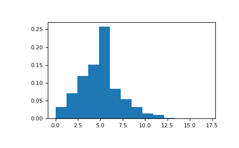

numpy.random.RandomState.poisson¶
-
RandomState.poisson(lam=1.0, size=None)¶ Draw samples from a Poisson distribution.
The Poisson distribution is the limit of the binomial distribution for large N.
Parameters: lam : float or array_like of floats
Expectation of interval, should be >= 0. A sequence of expectation intervals must be broadcastable over the requested size.
size : int or tuple of ints, optional
Output shape. If the given shape is, e.g.,
(m, n, k), thenm * n * ksamples are drawn. If size isNone(default), a single value is returned iflamis a scalar. Otherwise,np.array(lam).sizesamples are drawn.Returns: out : ndarray or scalar
Drawn samples from the parameterized Poisson distribution.
Notes
The Poisson distribution
For events with an expected separation the Poisson distribution describes the probability of
 events occurring within the observed
interval .
events occurring within the observed
interval .Because the output is limited to the range of the C long type, a ValueError is raised when lam is within 10 sigma of the maximum representable value.
References
[R189] Weisstein, Eric W. “Poisson Distribution.” From MathWorld–A Wolfram Web Resource. http://mathworld.wolfram.com/PoissonDistribution.html [R190] Wikipedia, “Poisson distribution”, http://en.wikipedia.org/wiki/Poisson_distribution Examples
Draw samples from the distribution:
>>> import numpy as np >>> s = np.random.poisson(5, 10000)
Display histogram of the sample:
>>> import matplotlib.pyplot as plt >>> count, bins, ignored = plt.hist(s, 14, normed=True) >>> plt.show()
Draw each 100 values for lambda 100 and 500:
>>> s = np.random.poisson(lam=(100., 500.), size=(100, 2))